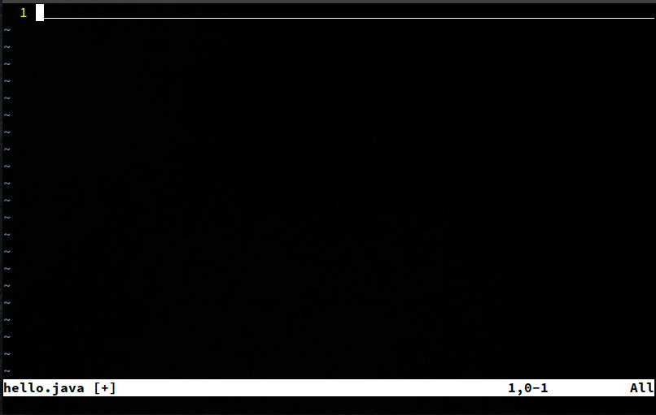
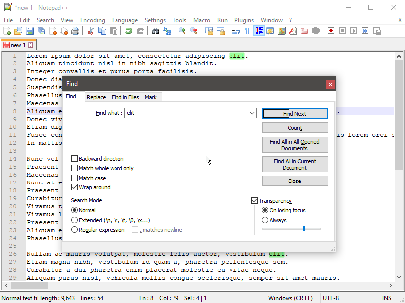

Edit Text... Faster
Caleb Meyer
The Problem
(being and feeling slow)
There must be a better way!
My First vi Experience

Modal Editing
Modal Editing
(You already do this)
Modal Editing

The three modes
Insert Mode i
The three modes
Insert Mode i
Command Mode <ESC>
The three modes
Insert Mode i
Command Mode <ESC>
Visual Mode v
The three modes
(there are more)
Key Sequences and Chords
Vim: Motions
h j k l
w(ord forward)
e(nd of word)
b(ack a word)
Vim: Motions
h j k l
w(ord forward)
e(nd of word)
b(ack a word)
t(il some character)
f(ind some character)
Vim: Commands
Ctrl-c → y(ank)
Vim: Commands
Ctrl-c → y(ank)
Ctrl-x
Vim: Commands
Ctrl-c → y(ank)
Ctrl-x → d(elete)
Vim: Commands
Ctrl-c → y(ank)
Ctrl-x → d(elete)
Ctrl-v
Vim: Commands
Ctrl-c → y(ank)
Ctrl-x → d(elete)
Ctrl-v → p(aste)
The true lesson
composition of commands